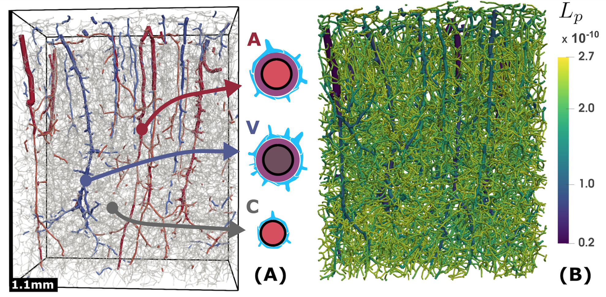
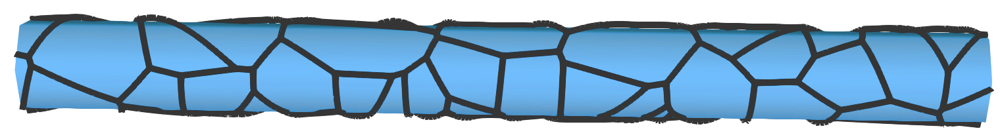
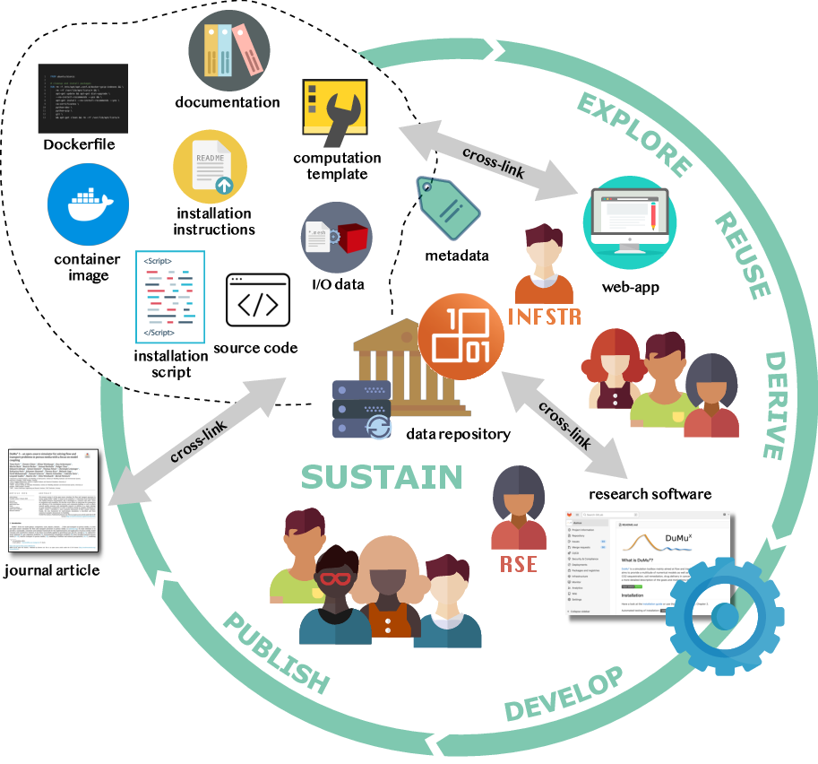
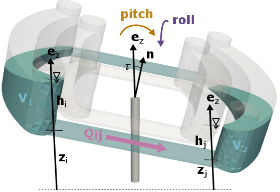
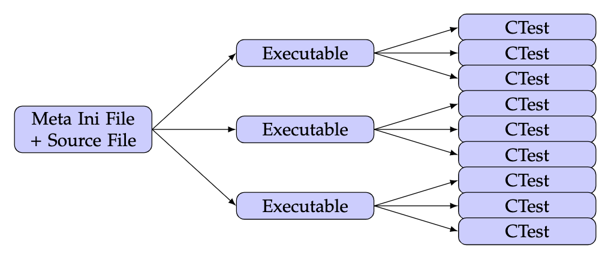

News
2023
20 Mar 23 Out paper “Estimates for the astrocyte endfoot sheath permeability of the extra-cellular pathway” is published in Fluids and Barriers of the Central Nervous System (with Vegard Vinje, and Kent-André Mardal) PDF
 
31 Jan 23 Our paper “fieldcompare: A Python package for regression testing simulation results” is published in The Journal of Open Source Software (with Dennis Gläser, Sören Peters, Sven Marcus, and Bernd Flemisch). The software repository is hosted at https://gitlab.com/dglaeser/fieldcompare. Contributions welcome! PDF

27 Jan 23 We published a new preprint on the ArXiv “A sustainable infrastructure concept for improved accessibility, reusability, and archival of research software “ (with D. Gläser, A. Seeland, S. Roy, K. Schulze, K. Weishaupt, D. Boehringer, S. Hermann, B. Flemisch). PDF

2022
20 Dec 22 Our paper “Pump-less, recirculating organ-on-a-chip (rOoC) platform” is published in Lab on a Chip (with M. Busek, A. Aizenshtadt, A. Frank, L. Delon, M. Amirola Martinez, A. Golovin, C. Dumas, J. Stokowiec, S. Gruenzner, E. Melum, S. Krauss) PDF

22 Oct 22 DuMux 3.6 released! The CI pipeline has been improved to test with C++20 and includes a spell checker. There are new finite volume discretization schemes. DuMux enables the use of multithreading for more functionality and multithreaded assembly has been enabled for embedded mixed-dimensional problems. DuMux 3.6 is the first version with some experimental metadata extraction capabilities and includes many other features and fixes Check out the DuMux website (dumux.org).
22 Aug 22 Our paper: “Robust monolithic solvers for the Stokes-Darcy problem with the Darcy equation in primal form” is published in the SIAM Journal on Scientific Computing (with Wietse Boon, Miroslav Kuchta, and Kent-André Mardal) PDF

02 Jun 22 DuMux 3.5 released! DuMux gets support for multithreaded assembly (using OpenMP or TBB or Kokkos or C++ parallel STL) and many other features and fixes Check out the DuMux website (dumux.org).
01 Mar 22 My paper “Projection-based resolved interface mixed-dimension method for embedded tubular network systems” is published in Computers & Mathematics with Applications PDF

01 Feb 22 Our paper “Nonlinear mixed-dimension model for embedded tubular networks with application to root water uptake” is published in the Journal of Computational Physics (with Hanchuan Wu, and Martin Schneider) PDF

2021
03 Aug 21 DuMux 3.4 released! Many new features and some bug fixes. We are excited that pore-network models have been added to DuMux mainly thanks to Kilian Weishaupt and others, great work! Check out the DuMux website (dumux.org).
04 Aug 21 Our paper “A fully implicit coupled pore-network/free-flow model for the pore-scale simulation of drying processes” is published in Drying Technology (with Kilian Weishaupt, and Rainer Helmig) PDF

04 May 21 Our paper: “A (Dual) Network Model for Heat Transfer in Porous Media” is published in Transport in Porous Media (with Kilian Weishaupt, Johannes Müller, Bernhard Weigand, and Rainer Helmig) PDF

01 Jan 21 Our paper: “DuMux 3 – an open-source simulator for solving flow and transport problems in porous media with a focus on model coupling” is published in Computers & Mathematics with Applications (with Dennis Gläser, Kilian Weishaupt, Bernd Flemisch, and others) PDF

2020
23 Nov 20 Our paper: “Hybrid models for simulating blood flow in microvascular networks” published in Multiscale Modeling & Simulation (with Ettore Vidotto, Tobias Köppl, Rainer Helmig, and Barbara Wohlmuth) was featured in the list of the SIAM Journals Top Three Most Cited Papers 2018-2020!
01 Jun 20 Our paper: “A new and consistent well model for one-phase flow in anisotropic porous media using a distributed source model” is published in the Journal of Computational Physics (with Rainer Helmig, and Martin Schneider)
01 Jun 20 Our paper: “Modeling tissue perfusion in terms of 1d-3d embedded mixed-dimension coupled problems with distributed sources” is published in the Journal of Computational Physics (with Martin Schneider, Rainer Helmig, and Patrick Jenny)
31 Mar 20 Our paper: “Call for Participation: Collaborative Benchmarking of Functional-Structural Root Architecture Models. The Case of Root Water Uptake” is published in Frontiers in Plant Science (with Andrea Schnepf and many others)

31 Mar 20 My PhD thesis: “Mixed-dimension models for flow and transport processes in porous media with embedded tubular network systems” is now available online PDF
2019
28 Dec 19 Our paper: “A multiscale subvoxel perfusion model to estimate diffusive capillary wall conductivity in multiple sclerosis lesions from perfusion MRI data” is published in the International Journal for Numerical Methods in Biomedical Engineering (with Bernd Flemisch, Rainer Helmig, Roland Wiest, and Dominik Obrist) PDF
26 Sep 19 Our paper: “Hybrid models for simulating blood flow in microvascular networks” is published in Multiscale Modeling & Simulation (with Ettore Vidotto, Tobias Köppl, Rainer Helmig, and Barbara Wohlmuth)
2018
23 Aug 18 Our paper: “A new simulation framework for soil-root interaction, evaporation, root growth, and solute transport” is published in the Vadose Zone Journal (with Katharina Heck, Natalie Schröder, Holger Class, and Rainer Helmig) PDF
2017
04 Mar 17 Our paper: “System testing in scientific numerical software frameworks using the example of DUNE” is published in the Archive of Numerical Software (with Dominic Kempf) PDF

04 Mar 17 Our paper: “The Dune FoamGrid implementation for surface and network grids” is published in the Archive of Numerical Software (with Oliver Sander, Natalie Schröder, and Bernd Flemisch) PDF
13 Dec 17 DuMux 2.12 released! This is the last release in the DuMux 2 series and we are excited to be working on DuMux 3.